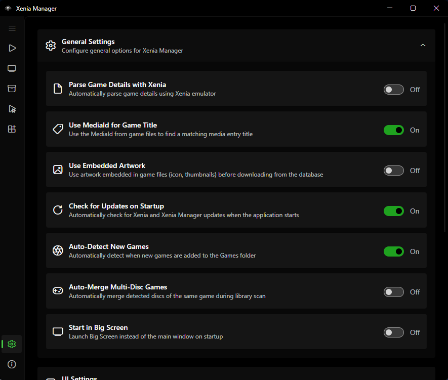
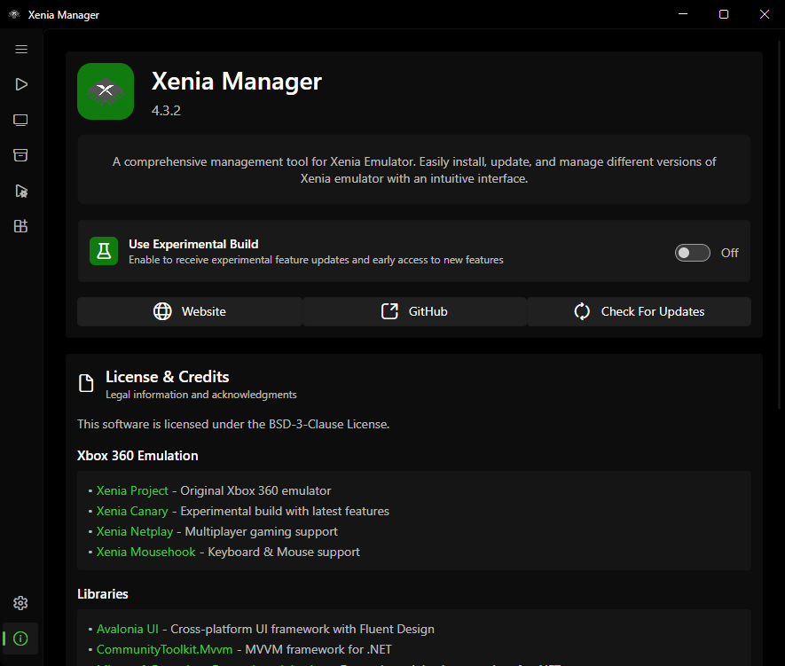

Manager Settings¶
The Settings page configures Xenia Manager itself (not the emulator - that is Xenia Settings). Settings persist to Config/config.json (with an automatic config.json.backup).

General¶
| Setting | Default | What it does |
|---|---|---|
| Parse game details with Xenia | off | Use Xenia's own parser for title extraction during scans. Slower but rescues some formats the fast parser misses. Try it when scans yield "Unknown Game" |
| Use MediaId for title | on | Match titles by Media ID rather than Title ID alone. Leave on unless a specific game mismatches |
| Auto-detect new games | on | Pick up files added to the games directory without a manual rescan |
| Auto-merge multi-disc | off | Merge detected multi-disc sets silently instead of asking each time |
| Start in Big Screen | off | Boot into BigScreen mode instead of the desktop window |
| Use embedded artwork | on | Prefer the icon embedded in the game file (XDBF SPA 0x8000) before downloading artwork |
UI: Theme, Language, Window¶
Theme¶
Five built-in themes: System (follows the OS), Light (default), Dark, Amoled (true-black dark for OLED screens), Steam (Steam-inspired styling).
Custom themes: copy source/XeniaManager/Resources/Themes/Template.axaml to a new file, recolor it (keep all x:Key names), register the name in the Theme enum (source/XeniaManager.Core/Models/Theme.cs) and the theme dictionary (ThemeService.cs) - full steps are in the main repo's Contributing Guide and summarized in Development.
Language¶
Shipped languages: English (en, default/fallback), Croatian (hr), Italian (it), Portuguese - Brazil (pt-BR), Russian (ru), Turkish (tr), Chinese - Simplified (zh-CN).
Translation files live in source/XeniaManager/Resources/Language/ (en.axaml is the template; copy to <code>.axaml for a new language). To contribute a translation, follow the main repo's Translations Guide (summarized in Development) - do not hand-edit the in-code SupportedLanguages list; maintainers wire that up at release time.
Window and loading screen¶
- Window position/size/state are remembered across launches.
- Loading screen (on by default): shows a splash while a game boots. Disable it if you prefer to see Xenia's window immediately.
Library Views¶
Library behaviour¶
Covered above under General (auto-detect, auto-merge) - the remaining library settings control presentation:
Grid view¶
- Show game title on tile (default on)
- Show compatibility badge (default on)
- Show Xenia version badge (default off - turn on when mixing variants)
- Zoom level (tile size)
- Double-click tile launches the game (default off)
List view columns¶
Toggle: compatibility rating, playtime, Xenia version, last played, game icon (all default on); Title ID and Media ID (default off - enable when diagnosing patch/content mismatches).
Sorting¶
Sort key + ascending/descending. Applies to the Library page ordering; search filtering composes with it.
Emulator¶
Unified content folder¶
Default off. When on, DLC/TU install to Emulators/Content/ shared across variants instead of each variant's content/ folder. See Content.
Profile settings¶
- Automatic save backup (default off) - snapshot profile saves automatically. See Profiles & Saves.
- Profile XUID (default
"B13EBABEBABEBABE") - ID stamped on saves. See Profiles & Saves. Do not change casually.
Per-variant channels¶
Stable vs. nightly channel and installed versions are managed on the Manage page, not here - they are listed here only because the values persist in the same config.json.
Updates¶
| Setting | Default | What it does |
|---|---|---|
| Check for updates on startup | on | Check Manager + emulator versions against the manifest on launch; badge pages when updates exist |
| Use experimental build | off (on in experimental builds) | Track preview/experimental Manager releases instead of stable |
When Manager update available is flagged, follow the prompt or reinstall from the releases page (see Installation). Emulator updates are applied per variant on the Manage page.
Debug¶
| Setting | Default | What it does |
|---|---|---|
| Log level | Info (Trace in experimental builds) |
Verbosity of Logs/ output: Trace / Debug / Info / Warn / Error / Fatal / Off. Raise to Trace/Debug when collecting logs for a bug report, then set it back. |
About Page¶

Shows the Manager version, links to releases/issues/wiki, license (BSD-3-Clause), and credits for contributors, translators, research references, and libraries. Use the version string here verbatim when filing bug reports.
Config File Reference¶
Config/config.json- all of the above. Human-readable JSON; safe to back up, and safe to hand-edit while the Manager is closed (it is re-read on startup).Config/config.json.backup- automatic backup of the last known-good settings.Config/games.json- the Library (see Library).Config/dashboard-settings.json- BigScreen/dashboard preferences.